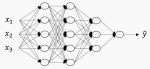

Lesson1 week4
第四周：深层神经网络(Deep Neural Networks)¶
4.1 深层神经网络（Deep L-layer neural network）¶
目前为止我们学习了只有一个单独隐藏层的神经网络的正向传播和反向传播，还有逻辑回归，并且你还学到了向量化，这在随机初始化权重时是很重要。
本周所要做的是把这些理念集合起来，就可以执行你自己的深度神经网络。
复习下前三周的课的内容：
1.逻辑回归，结构如下图左边。一个隐藏层的神经网络，结构下图右边：

注意，神经网络的层数是这么定义的：从左到右，由0开始定义，比如上边右图，\({x}_{1}\)、\({x}_{2}\)、\({x}_{3}\),这层是第0层，这层左边的隐藏层是第1层，由此类推。如下图左边是两个隐藏层的神经网络，右边是5个隐藏层的神经网络。

严格上来说逻辑回归也是一个一层的神经网络，而上边右图一个深得多的模型，浅与深仅仅是指一种程度。记住以下要点：
有一个隐藏层的神经网络，就是一个两层神经网络。记住当我们算神经网络的层数时，我们不算输入层，我们只算隐藏层和输出层。
但是在过去的几年中，DLI（深度学习学院 deep learning institute）已经意识到有一些函数，只有非常深的神经网络能学会，而更浅的模型则办不到。尽管对于任何给定的问题很难去提前预测到底需要多深的神经网络，所以先去尝试逻辑回归，尝试一层然后两层隐含层，然后把隐含层的数量看做是另一个可以自由选择大小的超参数，然后再保留交叉验证数据上评估，或者用你的开发集来评估。
我们再看下深度学习的符号定义：

上图是一个四层的神经网络，有三个隐藏层。我们可以看到，第一层（即左边数过去第二层，因为输入层是第0层）有5个神经元数目，第二层5个，第三层3个。
我们用L表示层数，上图：\(L=4\)，输入层的索引为“0”，第一个隐藏层\({n}^{[1]}=5\),表示有5个隐藏神经元，同理\({n}^{[2]}=5\)，\({n}^{[3]}=3\)，\({{n}^{[4]}}\)=\({{n}^{[L]}}=1\)（输出单元为1）。而输入层，\({n}^{[0]}={n}_{x}=3\)。
在不同层所拥有的神经元的数目，对于每层l都用\({a}^{[l]}\)来记作l层激活后结果，我们会在后面看到在正向传播时，最终能你会计算出\({{a}^{[l]}}\)。
通过用激活函数 \(g\) 计算\({z}^{[l]}\)，激活函数也被索引为层数\(l\)，然后我们用\({w}^{[l]}\)来记作在l层计算\({z}^{[l]}\)值的权重。类似的，\({{z}^{[l]}}\)里的方程\({b}^{[l]}\)也一样。
最后总结下符号约定：
输入的特征记作\(x\)，但是\(x\)同样也是0层的激活函数，所以\(x={a}^{[0]}\)。
最后一层的激活函数，所以\({a}^{[L]}\)是等于这个神经网络所预测的输出结果。
但是如果你忘记了某些符号的意义，请看笔记最后的附件：《深度学习符号指南》。
4.2 前向传播和反向传播（Forward and backward propagation）¶
之前我们学习了构成深度神经网络的基本模块，比如每一层都有前向传播步骤以及一个相反的反向传播步骤，这次视频我们讲讲如何实现这些步骤。
先讲前向传播，输入\({a}^{[l-1]}\)，输出是\({a}^{[l]}\)，缓存为\({z}^{[l]}\)；从实现的角度来说我们可以缓存下\({w}^{[l]}\)和\({b}^{[l]}\)，这样更容易在不同的环节中调用函数。

所以前向传播的步骤可以写成： \({z}^{[l]}={W}^{[l]}\cdot{a}^{[l-1]}+{b}^{[l]}\)
\({{a}^{[l]}}={{g}^{[l]}}\left( {{z}^{[l]}}\right)\)
向量化实现过程可以写成： \({z}^{[l]}={W}^{[l]}\cdot {A}^{[l-1]}+{b}^{[l]}\)
\({A}^{[l]}={g}^{[l]}({Z}^{[l]})\)
前向传播需要喂入\({A}^{[0]}\)也就是\(X\)，来初始化；初始化的是第一层的输入值。\({a}^{[0]}\)对应于一个训练样本的输入特征，而\({{A}^{[0]}}\)对应于一整个训练样本的输入特征，所以这就是这条链的第一个前向函数的输入，重复这个步骤就可以从左到右计算前向传播。
下面讲反向传播的步骤：
输入为\({{da}^{[l]}}\)，输出为\({{da}^{[l-1]}}\)，\({{dw}^{[l]}}\), \({{db}^{[l]}}\)

所以反向传播的步骤可以写成：
（1）\(d{{z}^{[l]}}=d{{a}^{[l]}}*{{g}^{[l]}}'( {{z}^{[l]}})\)
（2）\(d{{w}^{[l]}}=d{{z}^{[l]}}\cdot{{a}^{[l-1]}}~\)
（3）\(d{{b}^{[l]}}=d{{z}^{[l]}}~~\)
（4）\(d{{a}^{[l-1]}}={{w}^{\left[ l \right]T}}\cdot {{dz}^{[l]}}\)
（5）\(d{{z}^{[l]}}={{w}^{[l+1]T}}d{{z}^{[l+1]}}\cdot \text{ }{{g}^{[l]}}'( {{z}^{[l]}})~\)
式子（5）由式子（4）带入式子（1）得到，前四个式子就可实现反向函数。
向量化实现过程可以写成：
（6）\(d{{Z}^{[l]}}=d{{A}^{[l]}}*{{g}^{\left[ l \right]}}'\left({{Z}^{[l]}} \right)~~\)
（7）\(d{{W}^{[l]}}=\frac{1}{m}\text{}d{{Z}^{[l]}}\cdot {{A}^{\left[ l-1 \right]T}}\)
（8）\(d{{b}^{[l]}}=\frac{1}{m}\text{ }np.sum(d{{z}^{[l]}},axis=1,keepdims=True)\)
（9）\(d{{A}^{[l-1]}}={{W}^{\left[ l \right]T}}.d{{Z}^{[l]}}\)
总结一下：

第一层你可能有一个ReLU激活函数，第二层为另一个ReLU激活函数，第三层可能是sigmoid函数（如果你做二分类的话），输出值为，用来计算损失；这样你就可以向后迭代进行反向传播求导来求\({{dw}^{[3]}}\)，\({{db}^{[3]}}\) ，\({{dw}^{[2]}}\) ，\({{db}^{[2]}}\) ，\({{dw}^{[1]}}\) ，\({{db}^{[1]}}\)。在计算的时候，缓存会把\({{z}^{[1]}}\) \({{z}^{[2]}}\)\({{z}^{[3]}}\)传递过来，然后回传\({{da}^{[2]}}\)，\({{da}^{[1]}}\) ，可以用来计算\({{da}^{[0]}}\)，但我们不会使用它，这里讲述了一个三层网络的前向和反向传播，还有一个细节没讲就是前向递归——用输入数据来初始化，那么反向递归（使用Logistic回归做二分类）——对\({{A}^{[l]}}\) 求导。
忠告：补补微积分和线性代数，多推导，多实践。
4.3 深层网络中的前向传播（Forward propagation in a Deep Network）¶
跟往常一样，我们先来看对其中一个训练样本\(x\)如何应用前向传播，之后讨论向量化的版本。
第一层需要计算\({{z}^{[1]}}={{w}^{[1]}}x+{{b}^{[1]}}\)，\({{a}^{[1]}}={{g}^{[1]}} {({z}^{[1]})}\)（\(x\)可以看做\({{a}^{[0]}}\)）
第二层需要计算\({{z}^{[2]}}={{w}^{[2]}}{{a}^{[1]}}+{{b}^{[2]}}\)，\({{a}^{[2]}}={{g}^{[2]}} {({z}^{[2]})}\)
以此类推，
第四层为\({{z}^{[4]}}={{w}^{[4]}}{{a}^{[3]}}+{{b}^{[4]}}\)，\({{a}^{[4]}}={{g}^{[4]}} {({z}^{[4]})}\)
前向传播可以归纳为多次迭代\({{z}^{[l]}}={{w}^{[l]}}{{a}^{[l-1]}}+{{b}^{[l]}}\)，\({{a}^{[l]}}={{g}^{[l]}} {({z}^{[l]})}\)。

向量化实现过程可以写成：
\({{Z}^{[l]}}={{W}^{[l]}}{{a}^{[l-1]}}+{{b}^{[l]}}\)，\({{A}^{[l]}}={{g}^{[l]}}{({Z}^{[l]})}\) (\({{A}^{[0]}} = X)\)
这里只能用一个显式for循环，\(l\)从1到\(L\)，然后一层接着一层去计算。下一节讲的是避免代码产生BUG，我所做的其中一件非常重要的工作。
4.4 核对矩阵的维数（Getting your matrix dimensions right）¶
当实现深度神经网络的时候，其中一个我常用的检查代码是否有错的方法就是拿出一张纸过一遍算法中矩阵的维数。
\(w\)的维度是（下一层的维数，前一层的维数），即\({{w}^{[l]}}\): (\({{n}^{[l]}}\),\({{n}^{[l-1]}}\))；
\(b\)的维度是（下一层的维数，1），即:
\({{b}^{[l]}}\) : (\({{n}^{[l]}},1)\)；
\({{z}^{[l]}}\),\({{a}^{[l]}}\): \(({{n}^{[l]}},1)\);
\({{dw}^{[l]}}\)和\({{w}^{[l]}}\)维度相同，\({{db}^{[l]}}\)和\({{b}^{[l]}}\)维度相同，且\(w\)和\(b\)向量化维度不变，但\(z\),\(a\)以及\(x\)的维度会向量化后发生变化。

向量化后：
\({Z}^{[l]}\)可以看成由每一个单独的\({Z}^{[l]}\)叠加而得到，\({Z}^{[l]}=({{z}^{[l][1]}}，{{z}^{[l][2]}}，{{z}^{[l][3]}}，…，{{z}^{[l][m]}})\)，
\(m\)为训练集大小，所以\({Z}^{[l]}\)的维度不再是\(({{n}^{[l]}},1)\)，而是\(({{n}^{[l]}},m)\)。
\({A}^{[l]}\)：\(({n}^{[l]},m)\)，\({A}^{[0]} = X =({n}^{[l]},m)\)

在你做深度神经网络的反向传播时，一定要确认所有的矩阵维数是前后一致的，可以大大提高代码通过率。下一节我们讲为什么深层的网络在很多问题上比浅层的好。
4.5 为什么使用深层表示？（Why deep representations?）¶
我们都知道深度神经网络能解决好多问题，其实并不需要很大的神经网络，但是得有深度，得有比较多的隐藏层，这是为什么呢？我们一起来看几个例子来帮助理解，为什么深度神经网络会很好用。
首先，深度网络在计算什么？

首先，深度网络究竟在计算什么？如果你在建一个人脸识别或是人脸检测系统，深度神经网络所做的事就是，当你输入一张脸部的照片，然后你可以把深度神经网络的第一层，当成一个特征探测器或者边缘探测器。在这个例子里，我会建一个大概有20个隐藏单元的深度神经网络，是怎么针对这张图计算的。隐藏单元就是这些图里这些小方块（第一张大图），举个例子，这个小方块（第一行第一列）就是一个隐藏单元，它会去找这张照片里“|”边缘的方向。那么这个隐藏单元（第四行第四列），可能是在找（“—”）水平向的边缘在哪里。之后的课程里，我们会讲专门做这种识别的卷积神经网络，到时候会细讲，为什么小单元是这么表示的。你可以先把神经网络的第一层当作看图，然后去找这张照片的各个边缘。我们可以把照片里组成边缘的像素们放在一起看，然后它可以把被探测到的边缘组合成面部的不同部分（第二张大图）。比如说，可能有一个神经元会去找眼睛的部分，另外还有别的在找鼻子的部分，然后把这许多的边缘结合在一起，就可以开始检测人脸的不同部分。最后再把这些部分放在一起，比如鼻子眼睛下巴，就可以识别或是探测不同的人脸（第三张大图）。
你可以直觉上把这种神经网络的前几层当作探测简单的函数，比如边缘，之后把它们跟后几层结合在一起，那么总体上就能学习更多复杂的函数。这些图的意义，我们在学习卷积神经网络的时候再深入了解。还有一个技术性的细节需要理解的是，边缘探测器其实相对来说都是针对照片中非常小块的面积。就像这块（第一行第一列），都是很小的区域。面部探测器就会针对于大一些的区域，但是主要的概念是，一般你会从比较小的细节入手，比如边缘，然后再一步步到更大更复杂的区域，比如一只眼睛或是一个鼻子，再把眼睛鼻子装一块组成更复杂的部分。

这种从简单到复杂的金字塔状表示方法或者组成方法，也可以应用在图像或者人脸识别以外的其他数据上。比如当你想要建一个语音识别系统的时候，需要解决的就是如何可视化语音，比如你输入一个音频片段，那么神经网络的第一层可能就会去先开始试着探测比较低层次的音频波形的一些特征，比如音调是变高了还是低了，分辨白噪音，咝咝咝的声音，或者音调，可以选择这些相对程度比较低的波形特征，然后把这些波形组合在一起就能去探测声音的基本单元。在语言学中有个概念叫做音位，比如说单词ca，c的发音，“嗑”就是一个音位，a的发音“啊”是个音位，t的发音“特”也是个音位，有了基本的声音单元以后，组合起来，你就能识别音频当中的单词，单词再组合起来就能识别词组，再到完整的句子。

所以深度神经网络的这许多隐藏层中，较早的前几层能学习一些低层次的简单特征，等到后几层，就能把简单的特征结合起来，去探测更加复杂的东西。比如你录在音频里的单词、词组或是句子，然后就能运行语音识别了。同时我们所计算的之前的几层，也就是相对简单的输入函数，比如图像单元的边缘什么的。到网络中的深层时，你实际上就能做很多复杂的事，比如探测面部或是探测单词、短语或是句子。
有些人喜欢把深度神经网络和人类大脑做类比，这些神经科学家觉得人的大脑也是先探测简单的东西，比如你眼睛看得到的边缘，然后组合起来才能探测复杂的物体，比如脸。这种深度学习和人类大脑的比较，有时候比较危险。但是不可否认的是，我们对大脑运作机制的认识很有价值，有可能大脑就是先从简单的东西，比如边缘着手，再组合成一个完整的复杂物体，这类简单到复杂的过程，同样也是其他一些深度学习的灵感来源，之后的视频我们也会继续聊聊人类或是生物学理解的大脑。
Small：隐藏单元的数量相对较少
Deep：隐藏层数目比较多
深层的网络隐藏单元数量相对较少，隐藏层数目较多，如果浅层的网络想要达到同样的计算结果则需要指数级增长的单元数量才能达到。
另外一个，关于神经网络为何有效的理论，来源于电路理论，它和你能够用电路元件计算哪些函数有着分不开的联系。根据不同的基本逻辑门，譬如与门、或门、非门。在非正式的情况下，这些函数都可以用相对较小，但很深的神经网络来计算，小在这里的意思是隐藏单元的数量相对比较小，但是如果你用浅一些的神经网络计算同样的函数，也就是说在我们不能用很多隐藏层时，你会需要成指数增长的单元数量才能达到同样的计算结果。

我再来举个例子，用没那么正式的语言介绍这个概念。假设你想要对输入特征计算异或或是奇偶性，你可以算\(x_{1}XOR x_{2} XOR x_{3} XOR ……x_{n}\)，假设你有\(n\)或者\(n_{x}\)个特征，如果你画一个异或的树图，先要计算\(x_{1}\)，\(x_{2}\)的异或，然后是\(x_{3}\)和\(x_{4}\)。技术上来说如果你只用或门，还有非门的话，你可能会需要几层才能计算异或函数，但是用相对小的电路，你应该就可以计算异或了。然后你可以继续建这样的一个异或树图（上图左），那么你最后会得到这样的电路来输出结果\(y\)，\(\hat{y}=y\)，也就是输入特征的异或，或是奇偶性，要计算异或关系。这种树图对应网络的深度应该是\(O(log(n))\)，那么节点的数量和电路部件，或是门的数量并不会很大，你也不需要太多门去计算异或。
但是如果你不能使用多隐层的神经网络的话，在这个例子中隐层数为\(O(log(n))\)，比如你被迫只能用单隐藏层来计算的话，这里全部都指向从这些隐藏单元到后面这里，再输出\(y\)，那么要计算奇偶性，或者异或关系函数就需要这一隐层（上图右方框部分）的单元数呈指数增长才行，因为本质上来说你需要列举耗尽\(2^{n}\)种可能的配置，或是\(2^{n}\)种输入比特的配置。异或运算的最终结果是1或0，那么你最终就会需要一个隐藏层，其中单元数目随输入比特指数上升。精确的说应该是\(2^{n-1}\)个隐藏单元数，也就是\(O(2^{n})\)。
我希望这能让你有点概念，意识到有很多数学函数用深度网络计算比浅网络要容易得多，我个人倒是认为这种电路理论，对训练直觉思维没那么有用，但这个结果人们还是经常提到的，用来解释为什么需要更深层的网络。
除了这些原因，说实话，我认为“深度学习”这个名字挺唬人的，这些概念以前都统称为有很多隐藏层的神经网络，但是深度学习听起来多高大上，太深奥了，对么？这个词流传出去以后，这是神经网络的重新包装或是多隐藏层神经网络的重新包装，激发了大众的想象力。抛开这些公关概念重新包装不谈，深度网络确实效果不错，有时候人们还是会按照字面意思钻牛角尖，非要用很多隐层。但是当我开始解决一个新问题时，我通常会从logistic回归开始，再试试一到两个隐层，把隐藏层数量当作参数、超参数一样去调试，这样去找比较合适的深度。但是近几年以来，有一些人会趋向于使用非常非常深邃的神经网络，比如好几打的层数，某些问题中只有这种网络才是最佳模型。
这就是我想讲的，为什么深度学习效果拔群的直觉解释，现在我们来看看除了正向传播以外，反向传播该怎么具体实现。
4.6 搭建神经网络块（Building blocks of deep neural networks）¶
这周的前几个视频和之前几周的视频里，你已经看到过正向反向传播的基础组成部分了，它们也是深度神经网络的重要组成部分，现在我们来用它们建一个深度神经网络。

这是一个层数较少的神经网络，我们选择其中一层（方框部分），从这一层的计算着手。在第\(l\)层你有参数\(W^{[l]}\)和\(b^{[l]}\)，正向传播里有输入的激活函数，输入是前一层\(a^{[l-1]}\)，输出是\(a^{[l]}\)，我们之前讲过\(z^{[l]} =W^{[l]}a^{[l-1]} +b^{[l]}\),\(a^{[l]} =g^{[l]}(z^{[l]})\)，那么这就是你如何从输入\(a^{[l-1]}\)走到输出的\(a^{[l]}\)。之后你就可以把\(z^{[l]}\)的值缓存起来，我在这里也会把这包括在缓存中，因为缓存的\(z^{[i]}\)对以后的正向反向传播的步骤非常有用。
然后是反向步骤或者说反向传播步骤，同样也是第\(l\)层的计算，你会需要实现一个函数输入为\(da^{[l]}\)，输出\(da^{[l-1]}\)的函数。一个小细节需要注意，输入在这里其实是\(da^{[l]}\)以及所缓存的\(z^{[l]}\)值，之前计算好的\(z^{[l]}\)值，除了输出\(da^{[l-1]}\)的值以外，也需要输出你需要的梯度\(dW^{[l]}\)和\(db^{[l]}\)，这是为了实现梯度下降学习。
这就是基本的正向步骤的结构，我把它成为称为正向函数，类似的在反向步骤中会称为反向函数。总结起来就是，在l层，你会有正向函数，输入\(a^{[l-1]}\)并且输出\(a^{[l]}\)，为了计算结果你需要用\(W^{[l]}\)和\(b^{[l]}\)，以及输出到缓存的\(z^{[l]}\)。然后用作反向传播的反向函数，是另一个函数，输入\(da^{[l]}\)，输出\(da^{[l-1]}\)，你就会得到对激活函数的导数，也就是希望的导数值\(da^{[l]}\)。\(a^{[l-1]}\)是会变的，前一层算出的激活函数导数。在这个方块（第二个）里你需要\(W^{[l]}\)和\(b^{[l]}\)，最后你要算的是\(dz^{[l]}\)。然后这个方块（第三个）中，这个反向函数可以计算输出\(dW^{[l]}\)和\(db^{[l]}\)。我会用红色箭头标注标注反向步骤，如果你们喜欢，我可以把这些箭头涂成红色。

然后如果实现了这两个函数（正向和反向），然后神经网络的计算过程会是这样的：

把输入特征\(a^{[0]}\)，放入第一层并计算第一层的激活函数，用\(a^{[1]}\)表示，你需要\(W^{[1]}\)和\(b^{[1]}\)来计算，之后也缓存\(z^{[l]}\)值。之后喂到第二层，第二层里，需要用到\(W^{[2]}\)和\(b^{[2]}\)，你会需要计算第二层的激活函数\(a^{[2]}\)。后面几层以此类推，直到最后你算出了\(a^{[L]}\)，第\(L\)层的最终输出值\(\hat y\)。在这些过程里我们缓存了所有的\(z\)值，这就是正向传播的步骤。

对反向传播的步骤而言，我们需要算一系列的反向迭代，就是这样反向计算梯度，你需要把\(da^{[L]}\)的值放在这里，然后这个方块会给我们\({da}^{[L-1]}\)的值，以此类推，直到我们得到\({da}^{[2]}\)和\({da}^{[1]}\)，你还可以计算多一个输出值，就是\({da}^{[0]}\)，但这其实是你的输入特征的导数，并不重要，起码对于训练监督学习的权重不算重要，你可以止步于此。反向传播步骤中也会输出\(dW^{[l]}\)和\(db^{[l]}\)，这会输出\(dW^{[3]}\)和\(db^{[3]}\)等等。目前为止你算好了所有需要的导数，稍微填一下这个流程图。
神经网络的一步训练包含了，从\(a^{[0]}\)开始，也就是 \(x\) 然后经过一系列正向传播计算得到\(\hat y\)，之后再用输出值计算这个（第二行最后方块），再实现反向传播。现在你就有所有的导数项了，\(W\)也会在每一层被更新为\(W=W-αdW\)，\(b\)也一样，\(b=b-αdb\)，反向传播就都计算完毕，我们有所有的导数值，那么这是神经网络一个梯度下降循环。
继续下去之前再补充一个细节，概念上会非常有帮助，那就是把反向函数计算出来的\(z\)值缓存下来。当你做编程练习的时候去实现它时，你会发现缓存可能很方便，可以迅速得到\(W^{[l]}\)和\(b^{[l]}\)的值，非常方便的一个方法，在编程练习中你缓存了\(z\)，还有\(W\)和\(b\)对吧？从实现角度上看，我认为是一个很方便的方法，可以将参数复制到你在计算反向传播时所需要的地方。好，这就是实现过程的细节，做编程练习时会用到。
现在你们见过实现深度神经网络的基本元件，在每一层中有一个正向传播步骤，以及对应的反向传播步骤，以及把信息从一步传递到另一步的缓存。下一个视频我们会讲解这些元件具体实现过程，我们来看下一个视频吧。
4.7 参数VS超参数（Parameters vs Hyperparameters）¶
想要你的深度神经网络起很好的效果，你还需要规划好你的参数以及超参数。
什么是超参数？
比如算法中的learning rate \(a\)（学习率）、iterations(梯度下降法循环的数量)、\(L\)（隐藏层数目）、\({{n}^{[l]}}\)（隐藏层单元数目）、choice of activation function（激活函数的选择）都需要你来设置，这些数字实际上控制了最后的参数\(W\)和\(b\)的值，所以它们被称作超参数。
实际上深度学习有很多不同的超参数，之后我们也会介绍一些其他的超参数，如momentum、mini batch size、regularization parameters等等。
如何寻找超参数的最优值？

走Idea—Code—Experiment—Idea这个循环，尝试各种不同的参数，实现模型并观察是否成功，然后再迭代。
今天的深度学习应用领域，还是很经验性的过程，通常你有个想法，比如你可能大致知道一个最好的学习率值，可能说\(a=0.01\)最好，我会想先试试看，然后你可以实际试一下，训练一下看看效果如何。然后基于尝试的结果你会发现，你觉得学习率设定再提高到0.05会比较好。如果你不确定什么值是最好的，你大可以先试试一个学习率\(a\)，再看看损失函数J的值有没有下降。然后你可以试一试大一些的值，然后发现损失函数的值增加并发散了。然后可能试试其他数，看结果是否下降的很快或者收敛到在更高的位置。你可能尝试不同的\(a\)并观察损失函数\(J\)这么变了，试试一组值，然后可能损失函数变成这样，这个\(a\)值会加快学习过程，并且收敛在更低的损失函数值上（箭头标识），我就用这个\(a\)值了。
在前面几页中，还有很多不同的超参数。然而，当你开始开发新应用时，预先很难确切知道，究竟超参数的最优值应该是什么。所以通常，你必须尝试很多不同的值，并走这个循环，试试各种参数。试试看5个隐藏层，这个数目的隐藏单元，实现模型并观察是否成功，然后再迭代。这页的标题是，应用深度学习领域，一个很大程度基于经验的过程，凭经验的过程通俗来说，就是试直到你找到合适的数值。
另一个近来深度学习的影响是它用于解决很多问题，从计算机视觉到语音识别，到自然语言处理，到很多结构化的数据应用，比如网络广告或是网页搜索或产品推荐等等。我所看到过的就有很多其中一个领域的研究员，这些领域中的一个，尝试了不同的设置，有时候这种设置超参数的直觉可以推广，但有时又不会。所以我经常建议人们，特别是刚开始应用于新问题的人们，去试一定范围的值看看结果如何。然后下一门课程，我们会用更系统的方法，用系统性的尝试各种超参数取值。然后其次，甚至是你已经用了很久的模型，可能你在做网络广告应用，在你开发途中，很有可能学习率的最优数值或是其他超参数的最优值是会变的，所以即使你每天都在用当前最优的参数调试你的系统，你还是会发现，最优值过一年就会变化，因为电脑的基础设施，CPU或是GPU可能会变化很大。所以有一条经验规律可能每几个月就会变。如果你所解决的问题需要很多年时间，只要经常试试不同的超参数，勤于检验结果，看看有没有更好的超参数数值，相信你慢慢会得到设定超参数的直觉，知道你的问题最好用什么数值。
这可能的确是深度学习比较让人不满的一部分，也就是你必须尝试很多次不同可能性。但参数设定这个领域，深度学习研究还在进步中，所以可能过段时间就会有更好的方法决定超参数的值，也很有可能由于CPU、GPU、网络和数据都在变化，这样的指南可能只会在一段时间内起作用，只要你不断尝试，并且尝试保留交叉检验或类似的检验方法，然后挑一个对你的问题效果比较好的数值。
近来受深度学习影响，很多领域发生了变化，从计算机视觉到语音识别到自然语言处理到很多结构化的数据应用，比如网络广告、网页搜索、产品推荐等等；有些同一领域设置超参数的直觉可以推广，但有时又不可以，特别是那些刚开始研究新问题的人们应该去尝试一定范围内的结果如何，甚至那些用了很久的模型得学习率或是其他超参数的最优值也有可能会改变。
在下个课程我们会用系统性的方法去尝试各种超参数的取值。有一条经验规律：经常试试不同的超参数，勤于检查结果，看看有没有更好的超参数取值，你将会得到设定超参数的直觉。
4.8 深度学习和大脑的关联性（What does this have to do with the brain?）¶
深度学习和大脑有什么关联性吗？
关联不大。
那么人们为什么会说深度学习和大脑相关呢？
当你在实现一个神经网络的时候，那些公式是你在做的东西，你会做前向传播、反向传播、梯度下降法，其实很难表述这些公式具体做了什么，深度学习像大脑这样的类比其实是过度简化了我们的大脑具体在做什么，但因为这种形式很简洁，也能让普通人更愿意公开讨论，也方便新闻报道并且吸引大众眼球，但这个类比是非常不准确的。
一个神经网络的逻辑单元可以看成是对一个生物神经元的过度简化，但迄今为止连神经科学家都很难解释究竟一个神经元能做什么，它可能是极其复杂的；它的一些功能可能真的类似logistic回归的运算，但单个神经元到底在做什么目前还没有人能够真正可以解释。
深度学习的确是个很好的工具来学习各种很灵活很复杂的函数，学习到从\(x\)到\(y\)的映射，在监督学习中学到输入到输出的映射。

但这个类比还是很粗略的，这是一个logistic回归单元的sigmoid激活函数，这里是一个大脑中的神经元，图中这个生物神经元，也是你大脑中的一个细胞，它能接受来自其他神经元的电信号，比如\(x_1,x_2,x_3\)，或可能来自于其他神经元\(a_1,a_2,a_3\) 。其中有一个简单的临界计算值，如果这个神经元突然激发了，它会让电脉冲沿着这条长长的轴突，或者说一条导线传到另一个神经元。
所以这是一个过度简化的对比，把一个神经网络的逻辑单元和右边的生物神经元对比。至今为止其实连神经科学家们都很难解释，究竟一个神经元能做什么。一个小小的神经元其实却是极其复杂的，以至于我们无法在神经科学的角度描述清楚，它的一些功能，可能真的是类似logistic回归的运算，但单个神经元到底在做什么，目前还没有人能够真正解释，大脑中的神经元是怎么学习的，至今这仍是一个谜之过程。到底大脑是用类似于后向传播或是梯度下降的算法，或者人类大脑的学习过程用的是完全不同的原理。
所以虽然深度学习的确是个很好的工具，能学习到各种很灵活很复杂的函数来学到从x到y的映射。在监督学习中，学到输入到输出的映射，但这种和人类大脑的类比，在这个领域的早期也许值得一提。但现在这种类比已经逐渐过时了，我自己也在尽量少用这样的说法。
这就是神经网络和大脑的关系，我相信在计算机视觉，或其他的学科都曾受人类大脑启发，还有其他深度学习的领域也曾受人类大脑启发。但是个人来讲我用这个人类大脑类比的次数逐渐减少了。